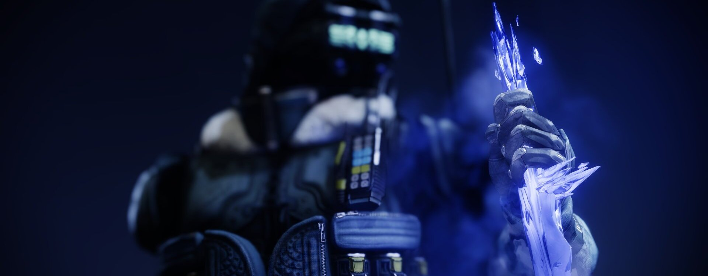
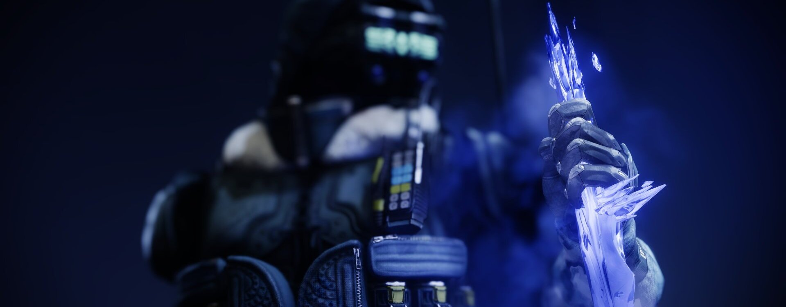

Le Chasseur
Les Chasseurs sillonnent les terres sauvages qui s'étendent au-delà de la Cité, exploitant la Lumière afin de découvrir les plus grands secrets de nos mondes perdus. Éclaireurs téméraires, ils sont des assassins furtifs, experts des couteaux et des armes de précision. Les Chasseurs tracent leur propre voie et respectent leur propre loi.
Un Capitaine déchu traque sa proie sur les terres désolées d'Europe, un Serviteur à ses côtés. Le vent soulève des volutes de givre scintillant. Il ne voit pas le kama glacé qui se précipite vers lui. La lame le frappe dans un craquement assourdissant. Le Serviteur a disparu. Le Capitaine court se mettre à couvert, mais il est trop tard. Il est désormais prisonnier du cristal.
Le cri qu'il veut pousser gèle à même sa gorge et il ne demeure qu'un silence assourdissant. Il voit une ombre s'approcher, nimbée de glace et de neige virevoltante, mais elle disparaît aussitôt. La peur l'étreint alors qu'il observe les étendues blanches.
Un second kama transperce l'étendue glaciaire. Des tourbillons de givre s'élèvent et lacèrent son corps gelé. Dans la rafale, il aperçoit à nouveau l'ombre, fusil au poing. La chasse est terminée. Il se brise dans le vent.
Revenant
Souffle et silence
Invoquez deux kamas stasiques, Souffle et Silence, que vous lancez l'un après l'autre.
Silence : crée une explosion de gel éclair qui gèle et blesse les cibles.
Souffle : crée une tempête stasique qui ralentit et blesse les cibles prises en son sein.
- Grenades